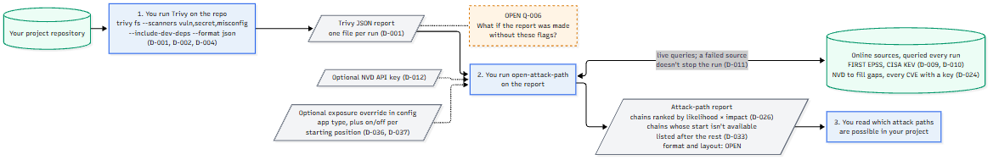
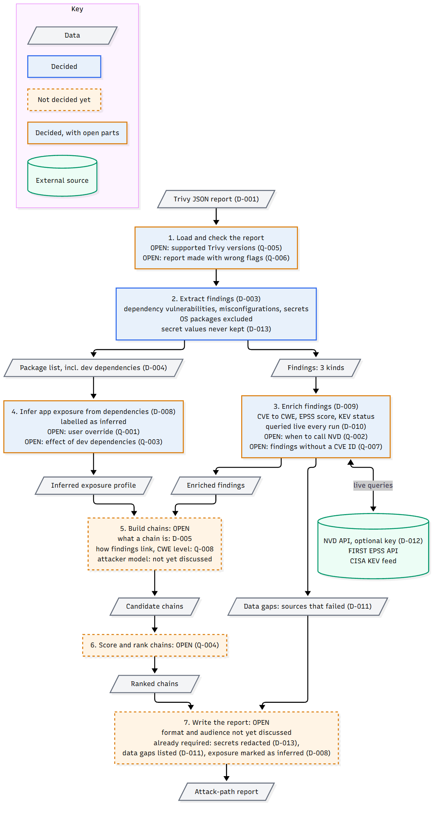
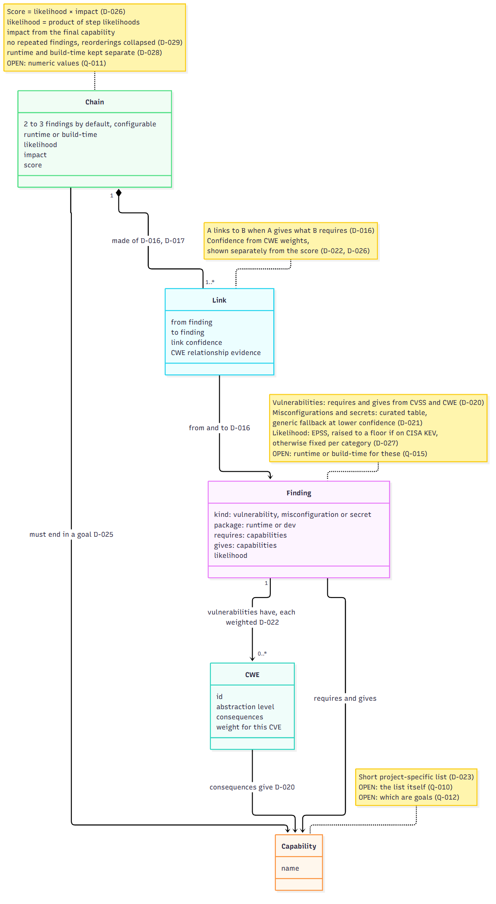
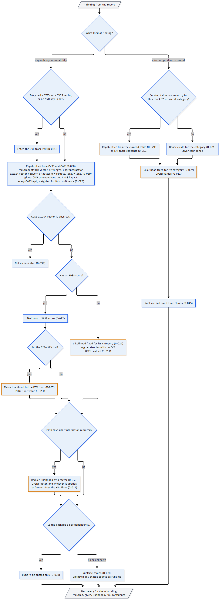

<meta charset="utf-8">
<title>open-attack-path Primer</title>
<meta name="claude:viewport-fit-sides" content="cover">
<style>
/* Layout: one calm reading column (65ch) with wider rows for interactive diagrams; motion per emilkowalski/skills */
:root {
  --bg: #fafbfc;
  --surface: #ffffff;
  --fg: #15181e;
  --muted: #5b6270;
  --line: #dfe3e9;
  --accent: #2563eb;
  --accent-soft: #e8f0fe;
  --open: #b45309;
  --open-soft: #fff4e5;
  --done: #15803d;
  --done-soft: #e9f7ee;
  --danger: #c2410c;
  --danger-soft: #fff1ea;
  --figure-bg: #ffffff;
  --shadow: 0 1px 2px rgba(16, 24, 40, 0.04), 0 8px 24px rgba(16, 24, 40, 0.06);

  --font: system-ui, -apple-system, "Segoe UI", Roboto, "Helvetica Neue", Arial, sans-serif;
  --mono: ui-monospace, "SFMono-Regular", "Cascadia Mono", Consolas, "Liberation Mono", monospace;

  --ease-out: cubic-bezier(0.23, 1, 0.32, 1);
  --ease-in-out: cubic-bezier(0.77, 0, 0.175, 1);

  --text: 65ch;
  --wide: 1080px;
}
@media (prefers-color-scheme: dark) {
  :root:not([data-theme="light"]) {
    --bg: #0d0f13; --surface: #15181e; --fg: #e9ecf1; --muted: #9aa2b0; --line: #2a2f38;
    --accent: #7ea2f7; --accent-soft: #1a2540; --open: #f0a43a; --open-soft: #2d2212;
    --done: #5fcf8a; --done-soft: #13281c; --danger: #fb8c5a; --danger-soft: #2e1a12; --figure-bg: #ffffff;
    --shadow: 0 1px 2px rgba(0, 0, 0, 0.3), 0 8px 24px rgba(0, 0, 0, 0.35);
    color-scheme: dark;
  }
}
:root[data-theme="dark"] {
  --bg: #0d0f13; --surface: #15181e; --fg: #e9ecf1; --muted: #9aa2b0; --line: #2a2f38;
  --accent: #7ea2f7; --accent-soft: #1a2540; --open: #f0a43a; --open-soft: #2d2212;
  --done: #5fcf8a; --done-soft: #13281c; --danger: #fb8c5a; --danger-soft: #2e1a12; --figure-bg: #ffffff;
  --shadow: 0 1px 2px rgba(0, 0, 0, 0.3), 0 8px 24px rgba(0, 0, 0, 0.35);
  color-scheme: dark;
}

html { -webkit-tap-highlight-color: transparent; -webkit-text-size-adjust: 100%; }
body {
  background: var(--bg);
  color: var(--fg);
  font: 100%/1.6 var(--font);
  padding-left: max(16px, env(safe-area-inset-left, 0px));
  padding-right: max(16px, env(safe-area-inset-right, 0px));
  padding-block: 0 4rem;
}
main { display: flex; flex-direction: column; gap: 4.5rem; max-width: var(--wide); margin: 0 auto; }
section { display: flex; flex-direction: column; gap: 1.25rem; }
.prose { max-width: var(--text); display: flex; flex-direction: column; gap: 1rem; }
.muted { color: var(--muted); }

h1, h2, h3 { margin: 0; text-wrap: balance; font-weight: 650; }
h1 { font-size: clamp(2.25rem, 5vw, 3.75rem); line-height: 1.05; letter-spacing: -0.03em; }
h2 { font-size: clamp(1.5rem, 3vw, 2rem); line-height: 1.15; letter-spacing: -0.02em; }
h3 { font-size: 1.125rem; line-height: 1.3; letter-spacing: -0.01em; }
p { margin: 0; }
ul, ol { margin: 0; padding-left: 1.25rem; display: flex; flex-direction: column; gap: 0.5rem; }
code, .id { font-family: var(--mono); font-size: 0.875em; }
.id { color: var(--accent); white-space: nowrap; }
a { color: var(--accent); text-underline-offset: 3px; }
a:focus-visible, button:focus-visible { outline: 2px solid var(--accent); outline-offset: 3px; border-radius: 6px; }

.eyebrow { font-size: 0.75rem; font-weight: 600; letter-spacing: 0.08em; text-transform: uppercase; color: var(--muted); }

/* Hero */
.hero { padding-top: 4.5rem; display: flex; flex-direction: column; gap: 1.5rem; }
.hero .lede { font-size: 1.25rem; line-height: 1.5; color: var(--muted); max-width: 52ch; }
.status { display: flex; flex-wrap: wrap; gap: 0.5rem; }
.pill {
  display: inline-flex; align-items: center; gap: 0.4rem; padding: 0.3rem 0.7rem; border-radius: 999px;
  font-size: 0.8125rem; font-weight: 550; background: var(--surface); border: 1px solid var(--line); color: var(--muted);
}
.pill .dot { width: 6px; height: 6px; border-radius: 50%; background: var(--open); }
.pill strong { color: var(--fg); font-variant-numeric: tabular-nums; font-weight: 650; }
nav.toc { display: flex; flex-wrap: wrap; gap: 0.25rem 1.25rem; font-size: 0.9375rem; border-top: 1px solid var(--line); padding-top: 1.25rem; }
nav.toc a { color: var(--muted); text-decoration: none; transition: color 150ms ease; }
@media (hover: hover) and (pointer: fine) { nav.toc a:hover { color: var(--fg); } }

/* Scanner list */
.table-wrap { overflow-x: auto; border: 1px solid var(--line); border-radius: 14px; background: var(--surface); }
table { border-collapse: collapse; width: 100%; font-size: 0.9375rem; }
th, td { text-align: left; padding: 0.65rem 1rem; border-bottom: 1px solid var(--line); vertical-align: top; }
th { font-size: 0.75rem; letter-spacing: 0.06em; text-transform: uppercase; color: var(--muted); font-weight: 600; }
tr:last-child td { border-bottom: 0; }
td.nowrap { white-space: nowrap; }
.sev { display: inline-block; font-size: 0.75rem; font-weight: 650; padding: 0.1rem 0.5rem; border-radius: 999px; }
.sev.high { color: var(--danger); background: var(--danger-soft); }
.sev.medium { color: var(--open); background: var(--open-soft); }
.sev.low { color: var(--muted); background: var(--bg); border: 1px solid var(--line); }

/* Interactive diagrams */
.diagram { display: grid; grid-template-columns: minmax(0, 1fr); gap: 1rem; }
.canvas { background: var(--surface); border: 1px solid var(--line); border-radius: 16px; padding: 1rem; box-shadow: var(--shadow); min-width: 0; }
.scroll-x { overflow-x: auto; }
.canvas svg { display: block; width: 100%; height: auto; min-width: 760px; }
.hint { font-size: 0.8125rem; color: var(--muted); margin-top: 0.5rem; }

svg .node, svg .stage { cursor: pointer; outline: none; }
svg .node rect, svg .stage rect.box {
  fill: var(--surface); stroke: var(--line); stroke-width: 1.5;
  transition: stroke 200ms ease, fill 200ms ease, stroke-width 200ms ease;
}
svg .node, svg .edge, svg .stage { transition: opacity 200ms ease; }
svg text { font-family: var(--font); }
svg .t { font-size: 13px; font-weight: 650; fill: var(--fg); }
svg .m { font-size: 11px; fill: var(--muted); font-family: var(--mono); }
svg .node.attacker rect { fill: var(--fg); stroke: var(--fg); }
svg .node.attacker .t { fill: var(--bg); }
svg .node.attacker .m { fill: var(--bg); opacity: 0.75; }
svg .node.goal rect { fill: var(--danger-soft); stroke: var(--danger); }
svg .node.goal .t { fill: var(--danger); }
svg .node.dead rect { stroke-dasharray: 5 4; }
svg .node.dead .t { fill: var(--muted); }
svg .edge path { fill: none; stroke: var(--muted); stroke-width: 1.5; opacity: 0.6; transition: stroke 200ms ease, opacity 200ms ease; }
svg .edge text { font-size: 11px; fill: var(--muted); paint-order: stroke; stroke: var(--surface); stroke-width: 5px; stroke-linejoin: round; }
svg .arrowhead { fill: var(--muted); }
svg .arrowhead.hot { fill: var(--accent); }

svg.focusing .node:not(.on), svg.focusing .edge:not(.on), svg.focusing .stage:not(.on) { opacity: 0.25; }
svg .node.on rect { stroke: var(--accent); stroke-width: 2.5; }
svg .node.goal.on rect { stroke: var(--danger); }
svg .edge.on path { stroke: var(--accent); opacity: 1; stroke-width: 2; }
svg .edge.on text { fill: var(--accent); }
svg .node:focus-visible rect, svg .stage:focus-visible rect.box { stroke: var(--accent); stroke-width: 3; }

/* Stage diagram states (same encoding as the planning diagrams) */
svg .stage.done rect.box { stroke: var(--accent); }
svg .stage.part rect.box { stroke: var(--open); }
svg .stage.open rect.box { stroke: var(--open); stroke-dasharray: 6 4; fill: var(--open-soft); }
svg .stage .num { font-size: 10.5px; font-weight: 600; letter-spacing: 0.08em; fill: var(--muted); font-family: var(--mono); }
svg .stage .st { font-size: 11px; font-weight: 600; }
svg .stage.done .st { fill: var(--accent); }
svg .stage.part .st, svg .stage.open .st { fill: var(--open); }
svg .stage.on rect.box { fill: var(--accent-soft); stroke-width: 2.5; }
svg .io rect { fill: var(--bg); stroke: var(--line); stroke-dasharray: 3 3; }
svg .io text { font-size: 11px; fill: var(--muted); }

/* Detail panel */
.panel {
  background: var(--surface); border: 1px solid var(--line); border-radius: 16px; padding: 1.1rem 1.25rem;
  display: flex; flex-direction: column; gap: 0.75rem; min-width: 0;
}
.panel .kicker { font-size: 0.75rem; font-weight: 600; letter-spacing: 0.06em; text-transform: uppercase; color: var(--muted); }
.panel h3 { font-size: 1.125rem; }
.panel p { color: var(--fg); }
.panel .facts { display: grid; grid-template-columns: repeat(auto-fit, minmax(min(100%, 200px), 1fr)); gap: 0.6rem 1.25rem; margin: 0; }
.panel .facts div { display: flex; flex-direction: column; gap: 0.15rem; min-width: 0; }
.panel .facts dt { font-size: 0.75rem; font-weight: 600; letter-spacing: 0.06em; text-transform: uppercase; color: var(--muted); }
.panel .facts dd { margin: 0; font-size: 0.9375rem; }
.panel .swap { transition: opacity 150ms ease; }
.panel.fading .swap { opacity: 0; }

.stepper { display: flex; align-items: center; gap: 0.5rem; flex-wrap: wrap; }
.stepper .count { font-size: 0.8125rem; color: var(--muted); font-variant-numeric: tabular-nums; margin-right: auto; }
.btn {
  font: inherit; font-size: 0.875rem; font-weight: 600; padding: 0.5rem 0.95rem; border-radius: 999px; cursor: pointer;
  border: 1px solid var(--line); background: var(--surface); color: var(--fg); touch-action: manipulation;
  transition: transform 160ms var(--ease-out), background-color 150ms ease, border-color 150ms ease;
}
.btn.primary { background: var(--fg); color: var(--bg); border-color: var(--fg); }
.btn:active { transform: scale(0.97); }
.btn:disabled { opacity: 0.4; cursor: default; }
.btn:disabled:active { transform: none; }
@media (hover: hover) and (pointer: fine) { .btn:not(:disabled):hover { border-color: var(--muted); } }
.dots { display: flex; gap: 0.35rem; }
.dots button { width: 8px; height: 8px; padding: 0; border-radius: 50%; border: 0; background: var(--line); cursor: pointer; transition: background-color 150ms ease, transform 160ms var(--ease-out); }
.dots button[aria-current="step"] { background: var(--accent); }
.dots button:active { transform: scale(0.85); }

@media (min-width: 980px) {
  .diagram.split { grid-template-columns: minmax(0, 1fr) 320px; align-items: start; }
}

/* Attacker principles */
.principles { list-style: none; padding: 0; display: grid; grid-template-columns: repeat(auto-fill, minmax(min(100%, 300px), 1fr)); gap: 0.75rem 2rem; counter-reset: p; }
.principles li { display: flex; flex-direction: column; gap: 0.25rem; padding-left: 0.9rem; border-left: 2px solid var(--line); min-width: 0; }
.principles li strong { font-weight: 650; }
.principles li span { color: var(--muted); font-size: 0.9375rem; }

/* Glossary */
.terms { display: grid; grid-template-columns: repeat(auto-fill, minmax(min(100%, 220px), 1fr)); gap: 0.75rem; margin: 0; }
.term { border-top: 1px solid var(--line); padding-top: 0.75rem; display: flex; flex-direction: column; gap: 0.3rem; min-width: 0; }
.term dt { font-weight: 650; }
.term dd { margin: 0; color: var(--muted); font-size: 0.9375rem; }

/* Rules */
.rules { display: grid; grid-template-columns: repeat(auto-fill, minmax(min(100%, 300px), 1fr)); gap: 0.75rem 2rem; list-style: none; padding: 0; }
.rules li { display: flex; flex-direction: column; gap: 0.2rem; padding-left: 0.9rem; border-left: 2px solid var(--line); min-width: 0; }
.rules li strong { font-weight: 650; }
.rules li span { color: var(--muted); font-size: 0.9375rem; }

/* Formula */
.formula {
  font-family: var(--mono); font-size: clamp(1rem, 2.4vw, 1.25rem); background: var(--surface); border: 1px solid var(--line);
  border-radius: 14px; padding: 1rem 1.25rem; overflow-x: auto; display: flex; flex-direction: column; gap: 0.35rem;
}
.formula .c { color: var(--muted); font-size: 0.8em; font-family: var(--font); }

/* Detailed PNG diagrams */
.gallery { display: grid; grid-template-columns: repeat(auto-fill, minmax(min(100%, 240px), 1fr)); gap: 0.75rem; }
.thumb {
  font: inherit; text-align: left; cursor: pointer; padding: 0; overflow: hidden; display: flex; flex-direction: column;
  background: var(--surface); border: 1px solid var(--line); border-radius: 14px; color: var(--fg); touch-action: manipulation;
  transition: transform 160ms var(--ease-out), border-color 150ms ease;
}
.thumb:active { transform: scale(0.97); }
@media (hover: hover) and (pointer: fine) { .thumb:hover { border-color: var(--muted); } }
.thumb .img { background: #ffffff; height: 150px; overflow: hidden; border-bottom: 1px solid var(--line); }
.thumb img { width: 100%; height: 100%; object-fit: cover; object-position: top center; display: block; }
.thumb .cap { padding: 0.7rem 0.9rem; display: flex; flex-direction: column; gap: 0.15rem; }
.thumb .cap strong { font-size: 0.9375rem; }
.thumb .cap span { font-size: 0.8125rem; color: var(--muted); }

/* Timeline */
.timeline { list-style: none; padding: 0; display: flex; flex-direction: column; gap: 0; max-width: var(--text); }
.timeline li { display: grid; grid-template-columns: 1.5rem 1fr; gap: 0.75rem; padding-bottom: 1.1rem; position: relative; }
.timeline li::before { content: ""; width: 10px; height: 10px; border-radius: 50%; background: var(--accent); margin: 0.45rem 0 0 0.25rem; }
.timeline li::after { content: ""; position: absolute; left: calc(0.25rem + 4px); top: 1.2rem; bottom: 0; width: 2px; background: var(--line); }
.timeline li:last-child::after { display: none; }
.timeline .what { display: flex; flex-direction: column; gap: 0.2rem; min-width: 0; }
.timeline .what span { color: var(--muted); font-size: 0.9375rem; }

.skills { display: grid; grid-template-columns: repeat(auto-fill, minmax(min(100%, 240px), 1fr)); gap: 0.75rem; }
.skill { background: var(--surface); border: 1px solid var(--line); border-radius: 14px; padding: 0.9rem 1rem; display: flex; flex-direction: column; gap: 0.3rem; min-width: 0; }
.skill code { color: var(--accent); font-weight: 600; }
.skill p { font-size: 0.9375rem; color: var(--muted); }
.tag { font-size: 0.6875rem; font-weight: 650; letter-spacing: 0.05em; text-transform: uppercase; padding: 0.15rem 0.45rem; border-radius: 5px; white-space: nowrap; }
.tag.part { color: var(--open); background: var(--open-soft); }
.tag.open { color: var(--open); background: transparent; border: 1px dashed currentColor; }

footer { max-width: var(--wide); margin: 4rem auto 0; border-top: 1px solid var(--line); padding-top: 1.25rem; font-size: 0.875rem; color: var(--muted); }

/* Diagram viewer: modal pattern from emilkowalski/skills (scale 0.96, 250ms ease-out) */
dialog {
  border: 0; padding: 0; border-radius: 18px; background: var(--figure-bg); box-shadow: var(--shadow);
  width: min(1200px, 100vw - 32px); max-height: calc(100dvh - 32px); overflow: auto;
  opacity: 1; transform: scale(1);
  transition: opacity 250ms var(--ease-out), transform 250ms var(--ease-out), overlay 250ms allow-discrete, display 250ms allow-discrete;
}
dialog:not([open]) { opacity: 0; transform: scale(0.96); }
@starting-style { dialog[open] { opacity: 0; transform: scale(0.96); } }
dialog::backdrop { background: rgba(10, 12, 16, 0.55); opacity: 1; transition: opacity 250ms var(--ease-out), overlay 250ms allow-discrete, display 250ms allow-discrete; }
dialog:not([open])::backdrop { opacity: 0; }
@starting-style { dialog[open]::backdrop { opacity: 0; } }
dialog img { display: block; width: 100%; height: auto; }
.close {
  position: sticky; top: 12px; float: right; margin: 12px 12px -48px 0; z-index: 1; font: inherit; font-size: 0.8125rem; font-weight: 600;
  padding: 0.45rem 0.8rem; border-radius: 999px; border: 1px solid #e4e7ec; background: rgba(255, 255, 255, 0.9); color: #15181e;
  cursor: pointer; touch-action: manipulation; transition: transform 160ms var(--ease-out);
}
.close:active { transform: scale(0.97); }

@media (prefers-reduced-motion: reduce) {
  dialog, dialog:not([open]) { transform: none; transition: opacity 200ms ease, overlay 200ms allow-discrete, display 200ms allow-discrete; }
  @starting-style { dialog[open] { transform: none; } }
  .btn, .thumb, .close, .dots button { transition: none; }
  .btn:active, .thumb:active, .close:active, .dots button:active { transform: none; }
}
</style>

<main>
  <header class="hero">
    <span class="eyebrow">Project primer</span>
    <h1>open-attack-path</h1>
    <p class="lede">A tool being designed to find the attack paths hiding between a project's vulnerabilities. This page explains the problem, how attackers exploit it, how the tool plans to work, and what we've decided so far.</p>
    <div class="status">
      <span class="pill"><span class="dot"></span>Planning phase, no code yet</span>
      <span class="pill"><strong>29</strong> decisions recorded</span>
      <span class="pill"><strong>11</strong> open questions</span>
    </div>
    <nav class="toc" aria-label="On this page">
      <a href="#problem">The problem</a>
      <a href="#attack">An attack, step by step</a>
      <a href="#attackers">How attackers think</a>
      <a href="#how">How the tool works</a>
      <a href="#chains">Building chains</a>
      <a href="#scoring">Scoring</a>
      <a href="#process">How we're planning</a>
      <a href="#next">What's left</a>
    </nav>
  </header>

  <!-- PROBLEM -->
  <section id="problem">
    <span class="eyebrow">The problem</span>
    <div class="prose">
      <h2>Scanners hand you a list. Attackers see a map.</h2>
      <p>A security scanner such as Trivy checks your project and returns a list of findings: vulnerable libraries, risky settings, passwords left in files. Each finding gets a severity (Low, Medium, High, Critical), and teams usually work through the list from the top.</p>
      <p>That approach treats every finding as if it lived alone. Attackers don't. They ask a different question: <strong>"What does this weakness let me do next?"</strong> A bug that leaks one file isn't scary until the file it leaks contains a key, and the key opens a door to a second bug. Linking weaknesses like this is called <strong>vulnerability chaining</strong>: two or more flaws or misconfigurations that, used in sequence, achieve an attack none of them could achieve alone.</p>
      <p>Here's what a scanner might report for a small web app. None of these are real; they're an example built to show the idea.</p>
    </div>

    <div class="table-wrap" role="region" aria-label="Example scanner findings">
      <table>
        <thead><tr><th>Finding</th><th>Type</th><th>Severity</th><th>Why it tends to wait</th></tr></thead>
        <tbody>
          <tr><td>Unsafe deserialisation in an admin API library</td><td class="nowrap">Dependency vulnerability</td><td><span class="sev high">High</span></td><td>"Only admins can reach that endpoint."</td></tr>
          <tr><td>Token signing key stored in <code>config.yml</code></td><td class="nowrap">Exposed secret</td><td><span class="sev high">High</span></td><td>"It's on our own server, nobody can read it."</td></tr>
          <tr><td>Path traversal in a file-serving library</td><td class="nowrap">Dependency vulnerability</td><td><span class="sev medium">Medium</span></td><td>"It only reads files, it can't change anything."</td></tr>
          <tr><td>Stored XSS in a comment-rendering library</td><td class="nowrap">Dependency vulnerability</td><td><span class="sev medium">Medium</span></td><td>"Someone would have to click on it."</td></tr>
          <tr><td>Slow regular expression (ReDoS)</td><td class="nowrap">Dependency vulnerability</td><td><span class="sev medium">Medium</span></td><td>"Worst case, the app restarts."</td></tr>
          <tr><td>Container runs as the root user</td><td class="nowrap">Misconfiguration</td><td><span class="sev medium">Medium</span></td><td>"Nobody can run code in there anyway."</td></tr>
          <tr><td>Old version of a test framework</td><td class="nowrap">Dev dependency</td><td><span class="sev low">Low</span></td><td>"It's only used to run tests."</td></tr>
        </tbody>
      </table>
    </div>
    <p class="muted" style="max-width: var(--text)">Each excuse is reasonable on its own. Read them together and they cancel out: the file reader can read the key, the key makes you an admin, and admins can reach the deserialisation bug.</p>
  </section>

  <!-- ATTACK GRAPH -->
  <section id="attack">
    <span class="eyebrow">An attack, step by step</span>
    <div class="prose">
      <h2>The same findings, drawn as an attacker sees them</h2>
      <p>Each box is a finding. An arrow means "this finding gives the attacker what the next one needs". Step through the attack, or hover any box to see what it needs, what it gives, and how it's abused.</p>
    </div>

    <div class="diagram">
      <div class="canvas">
        <div class="scroll-x">
          <svg id="attack-graph" viewBox="0 0 1110 450" role="img" aria-label="Attack graph: an attacker on the internet uses a path traversal bug to read a config file, finds a token signing key, forges an admin login, exploits an admin-only deserialisation bug to run code, and gains full control of a container that runs as root. A second route uses stored XSS to hijack an admin session. ReDoS and an old test library lead nowhere.">
            <defs>
              <marker id="arrow" viewBox="0 0 10 10" refX="9" refY="5" markerWidth="7" markerHeight="7" orient="auto-start-reverse"><path class="arrowhead" d="M0,0 L10,5 L0,10 z"></path></marker>
              <marker id="arrow-hot" viewBox="0 0 10 10" refX="9" refY="5" markerWidth="7" markerHeight="7" orient="auto-start-reverse"><path class="arrowhead hot" d="M0,0 L10,5 L0,10 z"></path></marker>
            </defs>

            <!-- edges -->
            <g class="edge" id="e-att-f1" data-from="ATT" data-to="F1"><path d="M140,235 C175,235 175,72 208,72" marker-end="url(#arrow)"></path></g>
            <g class="edge" id="e-att-f7" data-from="ATT" data-to="F7"><path d="M140,235 L208,235" marker-end="url(#arrow)"></path></g>
            <g class="edge" id="e-att-f5" data-from="ATT" data-to="F5"><path d="M140,235 C175,235 175,398 208,398" marker-end="url(#arrow)"></path></g>
            <g class="edge" id="e-f1-f2" data-from="F1" data-to="F2"><path d="M370,72 L448,72" marker-end="url(#arrow)"></path><text x="409" y="62" text-anchor="middle">file read</text></g>
            <g class="edge" id="e-f2-f3" data-from="F2" data-to="F3"><path d="M610,72 C650,72 650,172 688,172" marker-end="url(#arrow)"></path><text x="650" y="126" text-anchor="middle">admin login</text></g>
            <g class="edge" id="e-f7-f3" data-from="F7" data-to="F3"><path d="M370,235 C540,235 560,172 688,172" marker-end="url(#arrow)"></path><text x="520" y="222" text-anchor="middle">admin's session</text></g>
            <g class="edge" id="e-f3-g1" data-from="F3" data-to="G1"><path d="M850,172 C890,172 890,72 928,72" marker-end="url(#arrow)"></path><text x="889" y="124" text-anchor="middle">run code</text></g>
            <g class="edge" id="e-f3-f4" data-from="F3" data-to="F4"><path d="M850,172 C890,172 890,235 928,235" marker-end="url(#arrow)"></path></g>
            <g class="edge" id="e-f4-g2" data-from="F4" data-to="G2"><path d="M1010,267 L1010,364" marker-end="url(#arrow)"></path><text x="1022" y="320">root</text></g>
            <g class="edge" id="e-f5-x5" data-from="F5" data-to="X5"><path d="M370,398 L448,398" marker-end="url(#arrow)"></path><text x="409" y="388" text-anchor="middle">crash</text></g>

            <!-- nodes -->
            <g class="node attacker" id="ATT" tabindex="0" role="button" aria-label="Attacker"><rect x="20" y="203" width="120" height="64" rx="12"></rect><text class="t" x="80" y="231" text-anchor="middle">Attacker</text><text class="m" x="80" y="249" text-anchor="middle">anyone online</text></g>
            <g class="node" id="F1" tabindex="0" role="button" aria-label="Path traversal"><rect x="210" y="40" width="160" height="64" rx="12"></rect><text class="t" x="290" y="68" text-anchor="middle">Path traversal</text><text class="m" x="290" y="86" text-anchor="middle">CWE-22 · Medium</text></g>
            <g class="node" id="F7" tabindex="0" role="button" aria-label="Stored XSS"><rect x="210" y="203" width="160" height="64" rx="12"></rect><text class="t" x="290" y="231" text-anchor="middle">Stored XSS</text><text class="m" x="290" y="249" text-anchor="middle">CWE-79 · Medium</text></g>
            <g class="node" id="F5" tabindex="0" role="button" aria-label="ReDoS"><rect x="210" y="366" width="160" height="64" rx="12"></rect><text class="t" x="290" y="394" text-anchor="middle">ReDoS</text><text class="m" x="290" y="412" text-anchor="middle">CWE-1333 · Medium</text></g>
            <g class="node" id="F2" tabindex="0" role="button" aria-label="Token signing key"><rect x="450" y="40" width="160" height="64" rx="12"></rect><text class="t" x="530" y="68" text-anchor="middle">Token signing key</text><text class="m" x="530" y="86" text-anchor="middle">secret · High</text></g>
            <g class="node dead" id="X5" tabindex="0" role="button" aria-label="App slows or crashes"><rect x="450" y="366" width="160" height="64" rx="12"></rect><text class="t" x="530" y="394" text-anchor="middle">App slows or crashes</text><text class="m" x="530" y="412" text-anchor="middle">dead end</text></g>
            <g class="node" id="F3" tabindex="0" role="button" aria-label="Unsafe deserialisation"><rect x="690" y="140" width="160" height="64" rx="12"></rect><text class="t" x="770" y="168" text-anchor="middle">Deserialisation bug</text><text class="m" x="770" y="186" text-anchor="middle">CWE-502 · High</text></g>
            <g class="node dead" id="F6" tabindex="0" role="button" aria-label="Old test library"><rect x="690" y="366" width="160" height="64" rx="12"></rect><text class="t" x="770" y="394" text-anchor="middle">Old test library</text><text class="m" x="770" y="412" text-anchor="middle">dev only · Low</text></g>
            <g class="node goal" id="G1" tabindex="0" role="button" aria-label="Goal: run code on the server"><rect x="930" y="40" width="160" height="64" rx="12"></rect><text class="t" x="1010" y="68" text-anchor="middle">Run code on server</text><text class="m" x="1010" y="86" text-anchor="middle">attacker goal</text></g>
            <g class="node" id="F4" tabindex="0" role="button" aria-label="Container runs as root"><rect x="930" y="203" width="160" height="64" rx="12"></rect><text class="t" x="1010" y="231" text-anchor="middle">Runs as root</text><text class="m" x="1010" y="249" text-anchor="middle">misconfig · Medium</text></g>
            <g class="node goal" id="G2" tabindex="0" role="button" aria-label="Goal: own the container"><rect x="930" y="366" width="160" height="64" rx="12"></rect><text class="t" x="1010" y="394" text-anchor="middle">Own the container</text><text class="m" x="1010" y="412" text-anchor="middle">attacker goal</text></g>
          </svg>
        </div>
        <p class="hint">Red boxes are attacker goals. Dashed boxes lead nowhere. This example is made up to show the idea.</p>
      </div>

      <div class="panel" id="attack-panel" aria-live="polite">
        <div class="swap">
          <span class="kicker" id="ap-kicker">Step 1 of 7</span>
          <h3 id="ap-title">What the scanner sees</h3>
          <p id="ap-text"></p>
          <dl class="facts" id="ap-facts"></dl>
        </div>
        <div class="stepper">
          <span class="count" id="ap-count">1 / 7</span>
          <div class="dots" id="ap-dots" role="group" aria-label="Jump to step"></div>
          <button class="btn" type="button" id="ap-prev">Back</button>
          <button class="btn primary" type="button" id="ap-next">Next step</button>
        </div>
      </div>
    </div>
  </section>

  <!-- HOW ATTACKERS THINK -->
  <section id="attackers">
    <span class="eyebrow">How attackers think</span>
    <div class="prose">
      <h2>Why chaining works so well for attackers</h2>
      <p>The walkthrough above follows a pattern that shows up again and again in real breaches. Understanding it explains why a list sorted by severity isn't enough.</p>
    </div>
    <ol class="principles">
      <li><strong>They start from what they can reach</strong><span>An attacker on the internet can only touch what's exposed: your website, your API, anything that accepts input. Every chain begins at one of these entry points.</span></li>
      <li><strong>Each step is about gaining a new ability</strong><span>Read a file, then hold a key, then act as an admin, then run code, then own the machine. Every link turns one ability into a bigger one.</span></li>
      <li><strong>They aim for what defenders put off</strong><span>"Only admins can reach it", "it just reads files", "someone would have to click". Excuses like these leave links in place, and attackers look for exactly those.</span></li>
      <li><strong>Known bugs are cheap to use</strong><span>Many vulnerabilities have public exploit code. Lists like CISA KEV record the ones already used in real attacks, so chaining known bugs takes hours, not months.</span></li>
      <li><strong>Severity scores are judged one at a time</strong><span>A score rates a bug alone. A Medium that is the only way to the High is worth far more to an attacker than its score suggests.</span></li>
      <li><strong>Breaking one link stops the chain</strong><span>This is the defender's advantage. In the example, fixing the deserialisation bug blocks both routes at once. Seeing the chain tells you which fix matters most.</span></li>
    </ol>
    <div class="prose">
      <p>open-attack-path exists to give defenders the attacker's map. It takes the scanner's list, works out which findings connect, and shows the chains that reach a serious outcome, so you can:</p>
      <ul>
        <li><strong>See hidden combined risk</strong> that single severity scores miss.</li>
        <li><strong>Prioritise fixes</strong> by which chains are possible, not only by each finding's score.</li>
        <li><strong>Explain risk</strong> to people who aren't security specialists.</li>
        <li><strong>Learn</strong> how chaining works in real projects.</li>
      </ul>
      <p class="muted">It's a personal project for analysing my own projects, starting with small single-service apps (<span class="id">D-006</span>, <span class="id">D-007</span>, <span class="id">D-014</span>, <span class="id">D-015</span>).</p>
    </div>
  </section>

  <!-- TERMS -->
  <section id="terms">
    <span class="eyebrow">Key terms</span>
    <h2>The vocabulary you'll meet</h2>
    <dl class="terms">
      <div class="term"><dt>Trivy</dt><dd>A free scanner that checks a project for vulnerable dependencies, risky configuration and leaked secrets, and saves its results as JSON. It's our input.</dd></div>
      <div class="term"><dt>CVE</dt><dd>A public ID for one known vulnerability, like <code>CVE-2021-44228</code> (Log4Shell).</dd></div>
      <div class="term"><dt>CWE</dt><dd>A category of weakness, like "path traversal" (CWE-22) or "cross-site scripting" (CWE-79). One CVE can have several CWEs.</dd></div>
      <div class="term"><dt>CVSS</dt><dd>A standard score and description of a vulnerability: what an attacker needs (network access, a login, a user to click) and what they can damage.</dd></div>
      <div class="term"><dt>EPSS</dt><dd>A daily estimate of how likely a CVE is to be exploited in the next 30 days, from 0 to 1.</dd></div>
      <div class="term"><dt>CISA KEV</dt><dd>A US government list of vulnerabilities known to be exploited by real attackers.</dd></div>
      <div class="term"><dt>NVD</dt><dd>The US National Vulnerability Database: detailed records for each CVE, including CWEs and CVSS.</dd></div>
      <div class="term"><dt>Misconfiguration</dt><dd>A risky setting, such as a container that runs as root or a debug mode left switched on.</dd></div>
      <div class="term"><dt>Capability</dt><dd>Our own term: something an attacker can do at a point in time, such as "read files" or "run code". Findings need capabilities and give capabilities.</dd></div>
    </dl>
  </section>

  <!-- STAGES -->
  <section id="how">
    <span class="eyebrow">How the tool works</span>
    <div class="prose">
      <h2>From a scan report to ranked attack paths, in eight stages</h2>
      <p>You scan your project with Trivy and save the result as a JSON file. open-attack-path reads it, looks up extra facts about each finding online, works out which findings chain, and writes a report with the most important chains first. Pick a stage to see what it does.</p>
    </div>

    <div class="diagram">
      <div class="canvas">
        <div class="scroll-x">
          <svg id="stage-graph" viewBox="0 0 1000 356" role="img" aria-label="The eight stages of open-attack-path: load the report, extract findings, enrich with EPSS, KEV and NVD, infer exposure, assign capabilities using MITRE CWE data, build chains, score and rank, and write the report.">
            <defs>
              <marker id="sarrow" viewBox="0 0 10 10" refX="9" refY="5" markerWidth="7" markerHeight="7" orient="auto-start-reverse"><path class="arrowhead" d="M0,0 L10,5 L0,10 z"></path></marker>
            </defs>
            <!-- inputs and sources -->
            <g class="io"><rect x="55" y="6" width="120" height="26" rx="13"></rect><text x="115" y="23" text-anchor="middle">Trivy JSON</text></g>
            <g class="edge"><path d="M115,32 L115,58" marker-end="url(#sarrow)"></path></g>
            <g class="io"><rect x="555" y="6" width="160" height="26" rx="13"></rect><text x="635" y="23" text-anchor="middle">EPSS · CISA KEV · NVD</text></g>
            <g class="edge"><path d="M635,32 L635,58" marker-end="url(#sarrow)"></path></g>
            <g class="io"><rect x="835" y="324" width="120" height="26" rx="13"></rect><text x="895" y="341" text-anchor="middle">MITRE CWE data</text></g>
            <g class="edge"><path d="M895,324 L895,288" marker-end="url(#sarrow)"></path></g>
            <g class="io"><rect x="55" y="324" width="120" height="26" rx="13"></rect><text x="115" y="341" text-anchor="middle">Report</text></g>
            <g class="edge"><path d="M115,286 L115,322" marker-end="url(#sarrow)"></path></g>

            <!-- flow arrows -->
            <g class="edge"><path d="M210,98 L278,98" marker-end="url(#sarrow)"></path><text x="244" y="88" text-anchor="middle">report</text></g>
            <g class="edge"><path d="M470,98 L538,98" marker-end="url(#sarrow)"></path><text x="504" y="88" text-anchor="middle">findings</text></g>
            <g class="edge"><path d="M730,98 L798,98" marker-end="url(#sarrow)"></path><text x="764" y="88" text-anchor="middle">enriched</text></g>
            <g class="edge"><path d="M895,136 L895,208" marker-end="url(#sarrow)"></path><text x="905" y="176">+ exposure</text></g>
            <g class="edge"><path d="M800,248 L732,248" marker-end="url(#sarrow)"></path><text x="766" y="238" text-anchor="middle">needs, gives</text></g>
            <g class="edge"><path d="M540,248 L472,248" marker-end="url(#sarrow)"></path><text x="506" y="238" text-anchor="middle">chains</text></g>
            <g class="edge"><path d="M280,248 L212,248" marker-end="url(#sarrow)"></path><text x="246" y="238" text-anchor="middle">ranked</text></g>

            <!-- stages -->
            <g class="stage part" id="S1" tabindex="0" role="button" aria-label="Stage 1: Load the report"><rect class="box" x="20" y="60" width="190" height="76" rx="12"></rect><text class="num" x="36" y="82">STAGE 1</text><text class="t" x="36" y="103">Load the report</text><text class="st" x="36" y="122">partly open</text></g>
            <g class="stage done" id="S2" tabindex="0" role="button" aria-label="Stage 2: Extract findings"><rect class="box" x="280" y="60" width="190" height="76" rx="12"></rect><text class="num" x="296" y="82">STAGE 2</text><text class="t" x="296" y="103">Extract findings</text><text class="st" x="296" y="122">decided</text></g>
            <g class="stage done" id="S3" tabindex="0" role="button" aria-label="Stage 3: Enrich"><rect class="box" x="540" y="60" width="190" height="76" rx="12"></rect><text class="num" x="556" y="82">STAGE 3</text><text class="t" x="556" y="103">Enrich</text><text class="st" x="556" y="122">decided</text></g>
            <g class="stage part" id="S4" tabindex="0" role="button" aria-label="Stage 4: Infer exposure"><rect class="box" x="800" y="60" width="190" height="76" rx="12"></rect><text class="num" x="816" y="82">STAGE 4</text><text class="t" x="816" y="103">Infer exposure</text><text class="st" x="816" y="122">partly open</text></g>
            <g class="stage part" id="S5" tabindex="0" role="button" aria-label="Stage 5: Assign capabilities"><rect class="box" x="800" y="210" width="190" height="76" rx="12"></rect><text class="num" x="816" y="232">STAGE 5</text><text class="t" x="816" y="253">Assign capabilities</text><text class="st" x="816" y="272">partly open</text></g>
            <g class="stage part" id="S6" tabindex="0" role="button" aria-label="Stage 6: Build chains"><rect class="box" x="540" y="210" width="190" height="76" rx="12"></rect><text class="num" x="556" y="232">STAGE 6</text><text class="t" x="556" y="253">Build chains</text><text class="st" x="556" y="272">partly open</text></g>
            <g class="stage part" id="S7" tabindex="0" role="button" aria-label="Stage 7: Score and rank"><rect class="box" x="280" y="210" width="190" height="76" rx="12"></rect><text class="num" x="296" y="232">STAGE 7</text><text class="t" x="296" y="253">Score and rank</text><text class="st" x="296" y="272">partly open</text></g>
            <g class="stage open" id="S8" tabindex="0" role="button" aria-label="Stage 8: Write the report"><rect class="box" x="20" y="210" width="190" height="76" rx="12"></rect><text class="num" x="36" y="232">STAGE 8</text><text class="t" x="36" y="253">Write the report</text><text class="st" x="36" y="272">open</text></g>
          </svg>
        </div>
        <p class="hint">Blue outline: decided. Amber outline: decided, with open questions. Dashed: not decided yet.</p>
      </div>

      <div class="panel" id="stage-panel" aria-live="polite">
        <div class="swap">
          <span class="kicker" id="sp-kicker">Stage 1</span>
          <h3 id="sp-title"></h3>
          <p id="sp-text"></p>
          <dl class="facts" id="sp-facts"></dl>
        </div>
      </div>
    </div>
  </section>

  <!-- CHAINS -->
  <section id="chains">
    <span class="eyebrow">Building chains</span>
    <div class="prose">
      <h2>Needs and gives: how findings connect</h2>
      <p>The core idea matches how the attacker in the example moved. Every finding <strong>needs</strong> some capabilities before it can be used, and <strong>gives</strong> new ones once it is. Finding A links to finding B when A gives something B needs. The path traversal gives "file read"; the signing key needs "file read". That's a link.</p>
      <p>Where do the needs and gives come from?</p>
      <ul>
        <li><strong>Vulnerabilities:</strong> worked out automatically. What a vulnerability needs comes from its CVSS details (network access, a login, user interaction). What it gives comes from its CWE "consequences" and CVSS impact. <span class="id">D-020</span></li>
        <li><strong>Misconfigurations and secrets:</strong> a hand-written table keyed by Trivy's check ID, with a general rule per category as a fallback, marked lower confidence. <span class="id">D-021</span></li>
        <li><strong>Several CWEs on one CVE:</strong> all are kept, each weighted by how specific it is, who assigned it, and MITRE's guidance. The weights decide how confident we are in each link. <span class="id">D-022</span></li>
      </ul>
    </div>
    <ul class="rules">
      <li><strong>Only real findings</strong><span>Every step is a finding from the report. No invented steps. <span class="id">D-017</span></span></li>
      <li><strong>Two or three steps by default</strong><span>At least two findings, at most three unless you raise the limit. The example's fourth step needs a higher limit. <span class="id">D-018</span>, <span class="id">D-019</span></span></li>
      <li><strong>Must reach a goal</strong><span>A chain is reported only if its last step gives the attacker something serious. <span class="id">D-025</span></span></li>
      <li><strong>No loops or repeats</strong><span>A finding appears once per chain, and reordered copies are merged. <span class="id">D-029</span></span></li>
      <li><strong>Runtime and build-time apart</strong><span>Development-only dependencies, like the old test library, form their own build-time chains. <span class="id">D-028</span></span></li>
      <li><strong>CWE links as evidence</strong><span>MITRE's own "this weakness can lead to that one" links support a link but never create one. <span class="id">D-016</span></span></li>
    </ul>
  </section>

  <!-- SCORING -->
  <section id="scoring">
    <span class="eyebrow">Scoring</span>
    <div class="prose">
      <h2>Likelihood × impact</h2>
      <p>A report with hundreds of chains is useless unless the important ones come first. Each chain gets a score that separates "how likely is this?" from "how bad would it be?". <span class="id">D-026</span></p>
    </div>
    <div class="formula" aria-label="Scoring formula">
      <span>score = likelihood × impact</span>
      <span>likelihood = step 1 × step 2 × …</span>
      <span class="c">Every step has to succeed, so step likelihoods multiply. Impact comes from what the last step gives.</span>
    </div>
    <div class="prose">
      <p>Each step's likelihood comes from one of three places <span class="id">D-027</span>:</p>
      <ul>
        <li><strong>EPSS</strong> for vulnerabilities with a CVE.</li>
        <li><strong>A high minimum</strong> if the CVE is on the CISA known-exploited list, whatever EPSS says.</li>
        <li><strong>A fixed value per category</strong> for misconfigurations, secrets and advisories without a CVE.</li>
      </ul>
      <p class="muted">For example, with made-up values: path traversal at 0.40, the signing key at 0.90 and the deserialisation bug at 0.50 give a chain likelihood of 0.40 × 0.90 × 0.50 = 0.18. The real values aren't chosen yet (Q-011). Link confidence is shown next to the score but isn't part of it.</p>
    </div>
  </section>

  <!-- DETAILED DIAGRAMS -->
  <section id="diagrams">
    <span class="eyebrow">Detailed diagrams</span>
    <div class="prose">
      <h2>The planning diagrams</h2>
      <p>These are the working diagrams from the planning docs, with every decision ID and open question marked. Open one to see it full size.</p>
    </div>
    <div class="gallery">
      <button class="thumb" type="button" data-src="planning/diagrams/01-end-to-end.png" data-alt="End-to-end workflow diagram"><span class="img"></span><span class="cap"><strong>End-to-end workflow</strong><span>Your steps before and after the tool</span></span></button>
      <button class="thumb" type="button" data-src="planning/diagrams/02-internal-pipeline.png" data-alt="Internal pipeline diagram"><span class="img"></span><span class="cap"><strong>Internal pipeline</strong><span>Stages, data and external sources</span></span></button>
      <button class="thumb" type="button" data-src="planning/diagrams/03-chain-data-model.png" data-alt="Chain data model diagram"><span class="img"></span><span class="cap"><strong>Chain data model</strong><span>Findings, CWEs, capabilities, links, chains</span></span></button>
      <button class="thumb" type="button" data-src="planning/diagrams/04-step-decision-tree.png" data-alt="Step decision tree diagram"><span class="img"></span><span class="cap"><strong>Step decision tree</strong><span>How one finding becomes a chain step</span></span></button>
    </div>
  </section>

  <!-- PROCESS -->
  <section id="process">
    <span class="eyebrow">How we're planning</span>
    <div class="prose">
      <h2>Decide everything before writing code</h2>
      <p>The project deliberately starts with planning. Every design choice is asked about, answered, written down and reviewed before anything gets built. That makes the reasoning easy to follow, and cheap to change while it's still on paper.</p>
    </div>
    <ol class="timeline">
      <li><div class="what"><strong>Set up the planning workspace</strong><span>A <code>CLAUDE.md</code> with the "no code until the plan is approved" rule, a decision log and an open-questions list.</span></div></li>
      <li><div class="what"><strong>Interview: targets and inputs</strong><span>Decided the input (a Trivy JSON report), which findings count, the extra data sources and secret redaction. Decisions D-001 to D-013.</span></div></li>
      <li><div class="what"><strong>Checked the data sources</strong><span>Read Trivy's source code and live NVD, EPSS, KEV and CWE responses, so the plan rests on what the data really contains.</span></div></li>
      <li><div class="what"><strong>First workflow diagrams</strong><span>End-to-end and internal pipeline, with undecided parts drawn as open boxes.</span></div></li>
      <li><div class="what"><strong>Wrote the mission</strong><span>A README stating the problem and the goal. Decisions D-014 and D-015.</span></div></li>
      <li><div class="what"><strong>Interview: chain model</strong><span>How findings link, where capabilities come from, how chains are scored. Decisions D-016 to D-029, plus two new diagrams.</span></div></li>
    </ol>
    <div class="prose"><h3>The tools that keep the process honest</h3><p>These are Claude Code skills stored in the repo, so every session plans the same way.</p></div>
    <div class="skills">
      <div class="skill"><code>/plan-interview</code><p>Asks structured questions about one area, records each answer as a decision, and logs whatever's unclear.</p></div>
      <div class="skill"><code>/plan-challenge</code><p>Reviews a draft plan adversarially and turns every gap into a question.</p></div>
      <div class="skill"><code>/draw-workflow</code><p>Redraws the diagrams after each interview, then commits and opens a pull request.</p></div>
      <div class="skill"><code>/vuln-data</code><p>Checked reference notes on Trivy, NVD, EPSS, KEV and CWE data.</p></div>
      <div class="skill"><code>/cve-lookup</code><p>Pulls live data for one CVE to test ideas against real vulnerabilities.</p></div>
      <div class="skill"><code>/trivy-inspect</code><p>Summarises a real Trivy report without ever showing secret values.</p></div>
    </div>
  </section>

  <!-- NEXT -->
  <section id="next">
    <span class="eyebrow">What's left</span>
    <div class="prose">
      <h2>Before the first line of code</h2>
      <p>Coding starts once a written plan exists and has been approved. These are the areas still to settle, roughly in order.</p>
    </div>
    <div class="table-wrap">
      <table>
        <thead><tr><th>Area</th><th>Status</th><th>What it settles</th></tr></thead>
        <tbody>
          <tr><td class="nowrap"><strong>Attacker model</strong></td><td><span class="tag open">Open</span></td><td>Which outcomes count as goals, and where an attacker can start. Without this, the tool can't decide which chains to report.</td></tr>
          <tr><td class="nowrap"><strong>Real Trivy scan</strong></td><td><span class="tag open">To do</span></td><td>Scan one real project, so the capability list is built from real data.</td></tr>
          <tr><td class="nowrap"><strong>Capabilities and numbers</strong></td><td><span class="tag open">Open</span></td><td>The capability list, CWE weights and likelihood values.</td></tr>
          <tr><td class="nowrap"><strong>Confidence</strong></td><td><span class="tag open">Open</span></td><td>How sure a chain must be before it's reported.</td></tr>
          <tr><td class="nowrap"><strong>Report</strong></td><td><span class="tag part">Partly open</span></td><td>Format, layout and how each chain is explained.</td></tr>
          <tr><td class="nowrap"><strong>Scope and safety</strong></td><td><span class="tag part">Partly open</span></td><td>Static analysis only, or ever testing running systems?</td></tr>
          <tr><td class="nowrap"><strong>AI model use</strong></td><td><span class="tag open">Open</span></td><td>Whether a model like Claude helps, for example to explain chains in plain language.</td></tr>
          <tr><td class="nowrap"><strong>Operation and technology</strong></td><td><span class="tag open">Open</span></td><td>How you run it, the programming language and packaging.</td></tr>
          <tr><td class="nowrap"><strong>Testing</strong></td><td><span class="tag open">Open</span></td><td>Projects with known chains to test against, and what "it works" means.</td></tr>
          <tr><td class="nowrap"><strong>Plan and approval</strong></td><td><span class="tag open">Last</span></td><td>Write the plan, challenge it, approve it, then start coding.</td></tr>
        </tbody>
      </table>
    </div>
  </section>
</main>

<footer>
  Source of truth: <code>docs/planning/decisions.md</code>, <code>docs/planning/open-questions.md</code> and <code>docs/planning/diagrams/</code> in the open-attack-path repository. Updated 25 November 2026.
</footer>

<dialog id="viewer" aria-label="Diagram">
  <button class="close" type="button" id="viewer-close">Close</button>
  
</dialog>

<script>
(() => {
  /* ---------- shared helpers ---------- */
  const reduce = window.matchMedia('(prefers-reduced-motion: reduce)').matches;
  function swapPanel(panel, fill) {
    if (reduce) { fill(); return; }
    panel.classList.add('fading');
    setTimeout(() => { fill(); panel.classList.remove('fading'); }, 120);
  }
  function facts(dl, rows) {
    dl.innerHTML = '';
    rows.filter(r => r[1]).forEach(([k, v]) => {
      const d = document.createElement('div');
      const dt = document.createElement('dt'); dt.textContent = k;
      const dd = document.createElement('dd'); dd.textContent = v;
      d.append(dt, dd); dl.append(d);
    });
  }

  /* ---------- attack graph ---------- */
  const nodes = {
    ATT: { kind: 'Starting point', title: 'Attacker', text: 'Anyone on the internet who can reach the website. They start with nothing except the ability to send requests.', needs: 'Nothing', gives: 'Network access to the site' },
    F1: { kind: 'Dependency vulnerability · CWE-22 · Medium', title: 'Path traversal', text: 'A bug in a file-serving library lets a request like /files/../../config.yml escape the intended folder and read other files on the server.', needs: 'Network access', gives: 'Read files on the server', abuse: 'Reads configuration files, looking for passwords and keys.' },
    F2: { kind: 'Exposed secret · High', title: 'Token signing key in config.yml', text: 'The key the app uses to sign login tokens sits in a config file. Whoever holds it can create tokens the app trusts.', needs: 'Read files on the server', gives: 'Log in as any user, including admins', abuse: 'Forges a token that says "I am an admin".' },
    F7: { kind: 'Dependency vulnerability · CWE-79 · Medium', title: 'Stored XSS', text: 'A comment-rendering library lets a comment carry a script that runs in the browser of whoever views it.', needs: 'Network access, and an admin viewing the comment', gives: "Act as the viewer, using their browser session", abuse: 'Posts a booby-trapped comment and waits for an admin to open it.' },
    F5: { kind: 'Dependency vulnerability · CWE-1333 · Medium', title: 'ReDoS', text: 'A slow regular expression lets a crafted input tie up the server for seconds at a time.', needs: 'Network access', gives: 'Slow down or crash the app', abuse: 'Can knock the site over, but gives nothing to build on.' },
    X5: { kind: 'Outcome · dead end', title: 'App slows or crashes', text: 'Harmful, but it gives the attacker no new access, so no further finding can build on it. Whether "crash the app" counts as a goal is still open (Q-012).', needs: 'ReDoS', gives: 'No new access' },
    F3: { kind: 'Dependency vulnerability · CWE-502 · High', title: 'Unsafe deserialisation', text: 'A library behind an admin-only API turns submitted data back into objects without checking it, which can run attacker-chosen code. It often waits because "only admins can reach it".', needs: 'Admin access', gives: 'Run code on the server', abuse: 'Sends a crafted payload to the admin API.' },
    F6: { kind: 'Dev dependency · Low', title: 'Old test library', text: 'A vulnerable test framework that only runs on developer machines and in CI. It never ships in the running app, so it can only appear in separate build-time chains (D-028).', needs: 'Access to the build process', gives: 'Not reachable from the running app' },
    G1: { kind: 'Attacker goal', title: 'Run code on the server', text: 'The attacker can now do anything the app can: read the database, change data, plant a backdoor. This is where a chain becomes a serious incident.', needs: 'A finding that gives "run code"' },
    F4: { kind: 'Misconfiguration (Dockerfile) · Medium', title: 'Container runs as root', text: 'The app runs as the root user inside its container. Low risk while nobody can run code there; a big deal once someone can.', needs: 'Run code on the server', gives: 'Root inside the container', abuse: 'Installs tools, changes any file, looks for a way out to the host.' },
    G2: { kind: 'Attacker goal', title: 'Own the container', text: 'Full control of the container. Reaching it here takes four findings, so it shows up only when the chain length limit is raised above the default of 3 (D-018).', needs: 'Root inside the container' }
  };

  const steps = [
    { title: 'What the scanner sees', text: 'Seven separate findings: two High, four Medium, one Low. Each has a reasonable excuse for waiting. On a list, nothing connects them.', nodes: [], edges: [] },
    { title: '1. Get in', text: 'The attacker probes the public site and finds the path traversal bug. They can now read files on the server: a small foothold.', nodes: ['ATT', 'F1'], edges: ['e-att-f1'] },
    { title: '2. Look for keys', text: "They read config.yml and find the token signing key. With it they forge a login token that says they're an admin, and the app believes it.", nodes: ['ATT', 'F1', 'F2'], edges: ['e-att-f1', 'e-f1-f2'] },
    { title: '3. Escalate', text: 'As "admin", they reach the admin-only API and its deserialisation bug, and run their own code on the server. Three findings that each looked manageable add up to a serious goal.', nodes: ['ATT', 'F1', 'F2', 'F3', 'G1'], edges: ['e-att-f1', 'e-f1-f2', 'e-f2-f3', 'e-f3-g1'] },
    { title: '4. Dig in', text: 'Their code runs as root inside the container, so they own it. A fourth link, found only when the chain length limit is raised (D-018).', nodes: ['ATT', 'F1', 'F2', 'F3', 'F4', 'G1', 'G2'], edges: ['e-att-f1', 'e-f1-f2', 'e-f2-f3', 'e-f3-g1', 'e-f3-f4', 'e-f4-g2'] },
    { title: '5. A second route', text: "Fix the path traversal and this route remains: a booby-trapped comment hijacks an admin's session and reaches the same admin API. Both routes pass through the deserialisation bug, so fixing that one finding breaks both chains.", nodes: ['ATT', 'F7', 'F3', 'G1'], edges: ['e-att-f7', 'e-f7-f3', 'e-f3-g1'] },
    { title: '6. Dead ends', text: "Not every finding chains. ReDoS can crash the app but gives nothing to build on, and the test library never ships. These stay out of the runtime attack paths.", nodes: ['ATT', 'F5', 'X5', 'F6'], edges: ['e-att-f5', 'e-f5-x5'] }
  ];

  const svg = document.getElementById('attack-graph');
  const panel = document.getElementById('attack-panel');
  const apKicker = document.getElementById('ap-kicker');
  const apTitle = document.getElementById('ap-title');
  const apText = document.getElementById('ap-text');
  const apFacts = document.getElementById('ap-facts');
  const apCount = document.getElementById('ap-count');
  const prev = document.getElementById('ap-prev');
  const next = document.getElementById('ap-next');
  const dotsWrap = document.getElementById('ap-dots');
  const edges = [...svg.querySelectorAll('.edge')];
  const nodeEls = [...svg.querySelectorAll('.node')];
  let current = 0;

  steps.forEach((s, i) => {
    const b = document.createElement('button');
    b.type = 'button'; b.setAttribute('aria-label', 'Step ' + (i + 1) + ': ' + s.title);
    b.addEventListener('click', () => go(i));
    dotsWrap.append(b);
  });

  function highlight(nodeIds, edgeIds) {
    const focusing = nodeIds.length > 0;
    svg.classList.toggle('focusing', focusing);
    nodeEls.forEach(n => n.classList.toggle('on', nodeIds.includes(n.id)));
    edges.forEach(e => {
      const on = edgeIds.includes(e.id);
      e.classList.toggle('on', on);
      const p = e.querySelector('path');
      p.setAttribute('marker-end', on ? 'url(#arrow-hot)' : 'url(#arrow)');
    });
  }

  function showStep(i, animate) {
    const s = steps[i];
    const fill = () => {
      apKicker.textContent = 'Step ' + (i + 1) + ' of ' + steps.length;
      apTitle.textContent = s.title;
      apText.textContent = s.text;
      facts(apFacts, []);
    };
    animate ? swapPanel(panel, fill) : fill();
    highlight(s.nodes, s.edges);
    apCount.textContent = (i + 1) + ' / ' + steps.length;
    prev.disabled = i === 0;
    next.disabled = i === steps.length - 1;
    next.textContent = i === 0 ? 'Start the attack' : 'Next step';
    [...dotsWrap.children].forEach((d, j) => { if (j === i) d.setAttribute('aria-current', 'step'); else d.removeAttribute('aria-current'); });
  }
  function go(i) { current = Math.max(0, Math.min(steps.length - 1, i)); showStep(current, true); }
  prev.addEventListener('click', () => go(current - 1));
  next.addEventListener('click', () => go(current + 1));

  function showNode(id) {
    const n = nodes[id];
    const linked = edges.filter(e => e.dataset.from === id || e.dataset.to === id);
    const ids = new Set([id]);
    linked.forEach(e => { ids.add(e.dataset.from); ids.add(e.dataset.to); });
    highlight([...ids], linked.map(e => e.id));
    apKicker.textContent = n.kind;
    apTitle.textContent = n.title;
    apText.textContent = n.text;
    facts(apFacts, [['Needs', n.needs], ['Gives', n.gives], ['How it is abused', n.abuse]]);
  }
  let pinned = null;
  nodeEls.forEach(el => {
    el.addEventListener('mouseenter', () => { if (!pinned) showNode(el.id); });
    el.addEventListener('mouseleave', () => { if (!pinned) showStep(current, false); });
    el.addEventListener('focus', () => showNode(el.id));
    el.addEventListener('blur', () => { if (!pinned) showStep(current, false); });
    el.addEventListener('click', () => {
      if (pinned === el.id) { pinned = null; showStep(current, false); }
      else { pinned = el.id; showNode(el.id); }
    });
    el.addEventListener('keydown', e => { if (e.key === 'Enter' || e.key === ' ') { e.preventDefault(); el.dispatchEvent(new Event('click')); } });
  });
  [prev, next, ...dotsWrap.children].forEach(b => b.addEventListener('click', () => { pinned = null; }));
  showStep(0, false);

  /* ---------- stage overview ---------- */
  const stages = {
    S1: { title: 'Load the report', text: 'Reads the one Trivy JSON file you give it and checks it can be used.', input: 'Trivy JSON report from a scan of your repo (D-001, D-002)', output: 'Parsed report', decided: 'One file per run, made by you beforehand (D-001)', open: 'Which Trivy versions to support (Q-005); what to do if the scan used the wrong options (Q-006)' },
    S2: { title: 'Extract findings', text: 'Pulls out the three kinds of finding that can be chain links, and the full list of packages.', input: 'Parsed report', output: 'Findings (vulnerabilities, misconfigurations, secrets) and the package list', decided: 'Three finding types, OS packages left out (D-003); full dependency tree incl. dev dependencies (D-004); secret values never kept (D-013)', open: '' },
    S3: { title: 'Enrich', text: 'Adds facts about each vulnerability from online sources, fetched fresh on every run.', input: 'Findings', output: 'Enriched findings, plus a list of any sources that failed', decided: 'CWEs, EPSS and CISA KEV (D-009, D-010); NVD only fills gaps, or covers every CVE when a key is set (D-012, D-024); failed sources are flagged, not fatal (D-011)', open: '' },
    S4: { title: 'Infer exposure', text: 'Guesses how the app is exposed from its dependencies, for example "this is a web server", and labels it as a guess.', input: 'Package list', output: 'Exposure profile (inferred)', decided: 'Inferred from dependencies for now (D-008)', open: 'Can users correct the guess? (Q-001); should dev dependencies count? (Q-003)' },
    S5: { title: 'Assign capabilities', text: 'Gives every finding a list of what it needs and what it gives an attacker. This is what makes linking possible.', input: 'Enriched findings, MITRE CWE data, the curated table', output: 'Findings with needs, gives and link confidence', decided: 'Vulnerabilities from CVSS + CWE (D-020); misconfigurations and secrets from a curated table with a fallback (D-021); all CWEs kept and weighted (D-022); short project-specific capability list (D-023)', open: 'The capability list itself (Q-010); how CWE data is obtained (Q-014); which chains misconfigurations and secrets can join (Q-015)' },
    S6: { title: 'Build chains', text: 'Connects findings where one gives what the next needs, and keeps the chains that reach an attacker goal.', input: 'Findings with needs and gives, exposure profile', output: 'Candidate chains, runtime and build-time', decided: 'Capability matching (D-016); findings only (D-017); 2 to 3 steps by default (D-018, D-019); must end in a goal (D-025); runtime and build-time apart (D-028); no repeats (D-029)', open: 'Which outcomes are goals and where attackers start (Q-012); build-time goals (Q-013)' },
    S7: { title: 'Score and rank', text: 'Scores each chain by likelihood × impact so the most important ones come first.', input: 'Candidate chains', output: 'Ranked chains', decided: 'Likelihood × impact, step likelihoods multiplied (D-026); EPSS, a KEV minimum, or a category value (D-027)', open: 'The actual numbers (Q-011)' },
    S8: { title: 'Write the report', text: 'Turns the ranked chains into something a developer can act on and a non-specialist can follow.', input: 'Ranked chains, data gaps', output: 'The attack-path report', decided: 'Secrets redacted (D-013); data gaps and NVD mode stated (D-011, D-024); guesses labelled (D-008); link confidence shown (D-022); written for technical and non-specialist readers (D-015)', open: 'Format, layout and how each chain is presented (not yet discussed)' }
  };
  const sSvg = document.getElementById('stage-graph');
  const sPanel = document.getElementById('stage-panel');
  const stageEls = [...sSvg.querySelectorAll('.stage')];
  const status = { done: 'Decided', part: 'Decided, with open questions', open: 'Not decided yet' };
  let selected = 'S1';
  function showStage(id, animate) {
    const s = stages[id];
    const el = document.getElementById(id);
    const st = el.classList.contains('done') ? 'done' : el.classList.contains('open') ? 'open' : 'part';
    const fill = () => {
      document.getElementById('sp-kicker').textContent = 'Stage ' + id.slice(1) + ' · ' + status[st];
      document.getElementById('sp-title').textContent = s.title;
      document.getElementById('sp-text').textContent = s.text;
      facts(document.getElementById('sp-facts'), [['Takes in', s.input], ['Hands on', s.output], ['Decided', s.decided], ['Still open', s.open]]);
    };
    animate ? swapPanel(sPanel, fill) : fill();
    stageEls.forEach(x => x.classList.toggle('on', x.id === id));
  }
  stageEls.forEach(el => {
    el.addEventListener('mouseenter', () => showStage(el.id, false));
    el.addEventListener('mouseleave', () => showStage(selected, false));
    el.addEventListener('focus', () => showStage(el.id, false));
    el.addEventListener('click', () => { selected = el.id; showStage(el.id, true); });
    el.addEventListener('keydown', e => { if (e.key === 'Enter' || e.key === ' ') { e.preventDefault(); selected = el.id; showStage(el.id, true); } });
  });
  showStage('S1', false);

  /* ---------- PNG viewer ---------- */
  const viewer = document.getElementById('viewer');
  const viewerImg = document.getElementById('viewer-img');
  document.querySelectorAll('.thumb').forEach(btn => {
    btn.addEventListener('click', () => { viewerImg.src = btn.dataset.src; viewerImg.alt = btn.dataset.alt; viewer.showModal(); });
  });
  document.getElementById('viewer-close').addEventListener('click', () => viewer.close());
  viewer.addEventListener('click', e => { if (e.target === viewer) viewer.close(); });
})();
</script>
